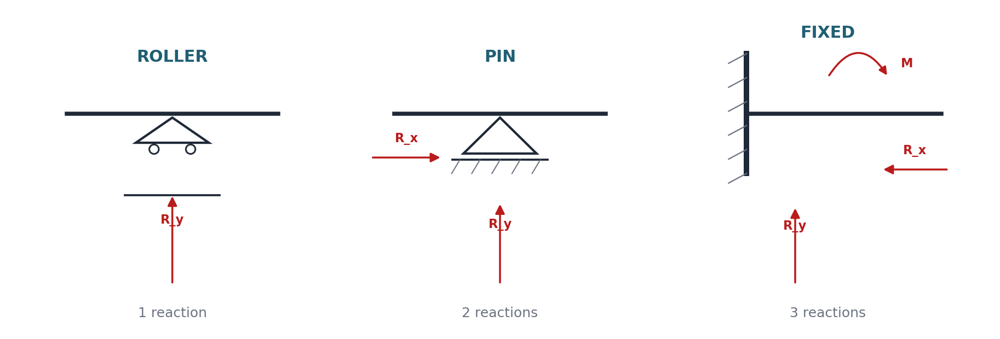
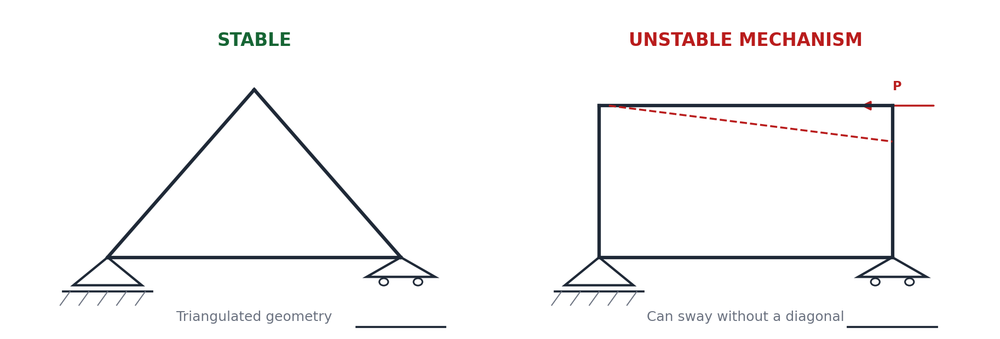
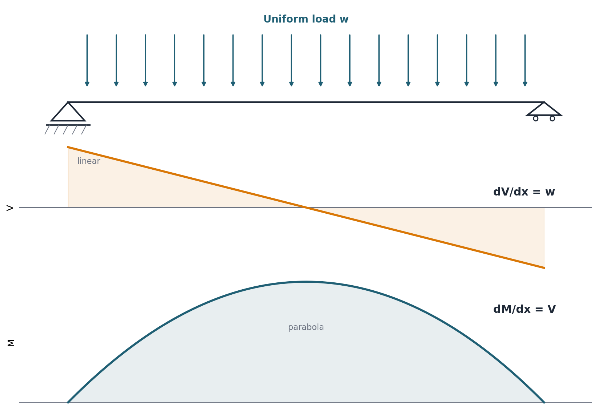
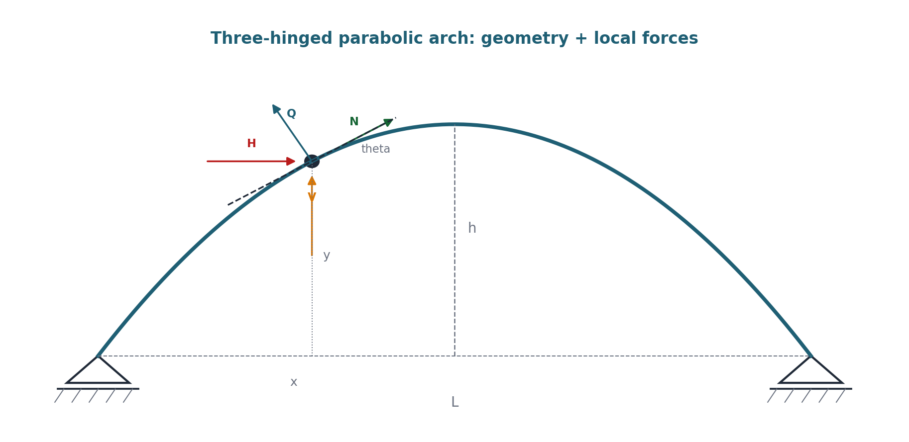
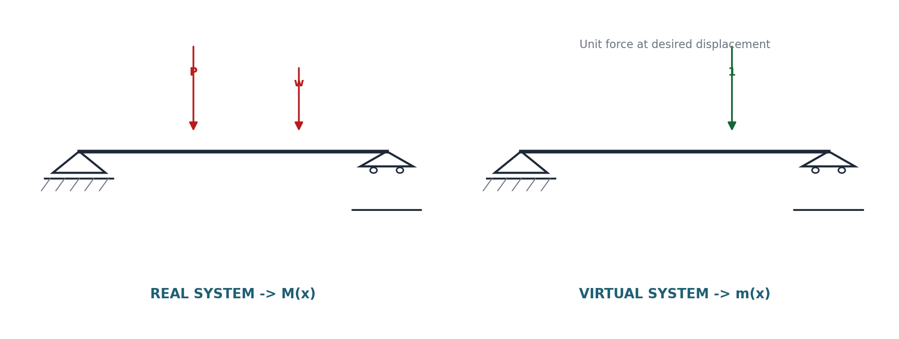
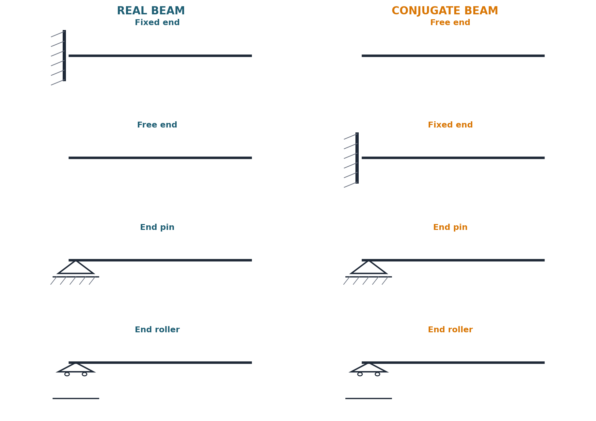
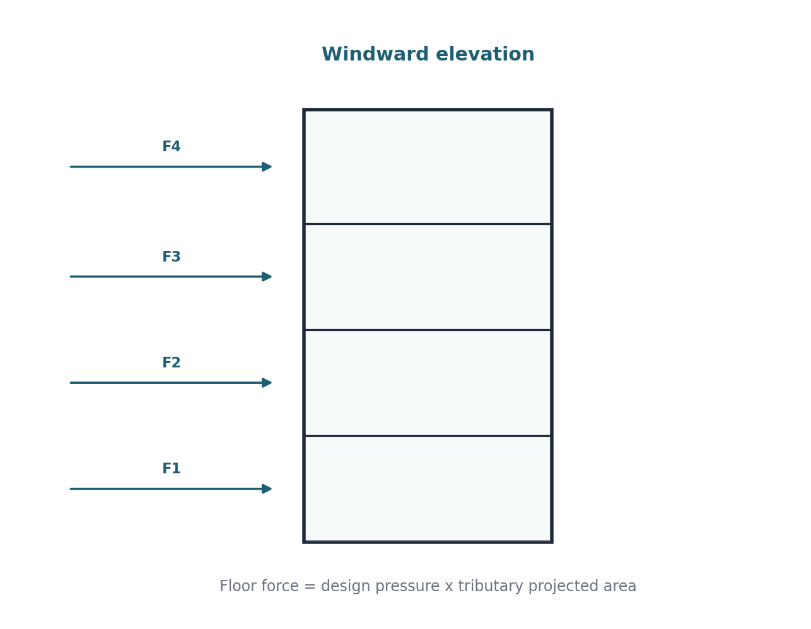
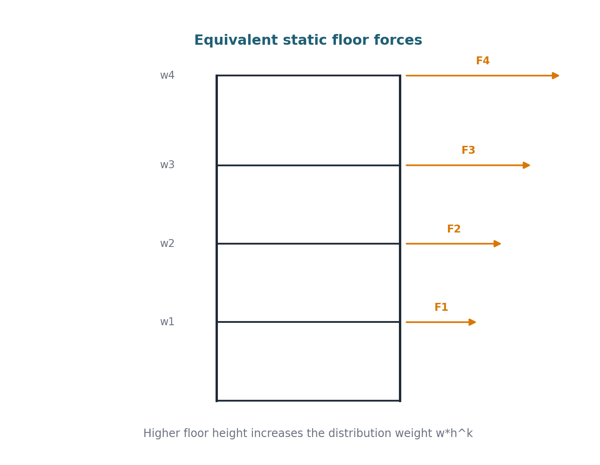

Class Note · Section A + Section B
Complete Set-wise Class Note
Every set combines learning targets, master formulas, Bangla-friendly memory logic, common mistakes and matching question-bank patterns. Use the checkbox at each set when you can solve it without the note.
Essential sketches
Visual memory board
Clean structural sketches from the compiled class-note pack. Use them to recall support behavior, force flow and method logic.







